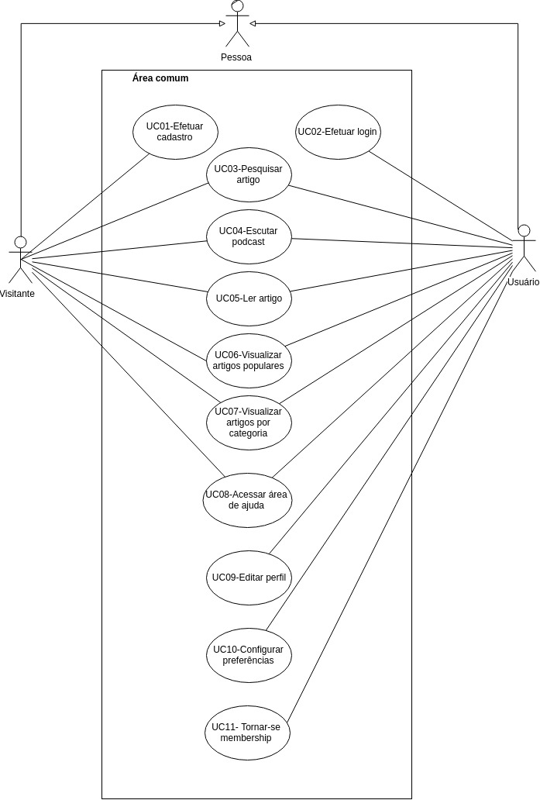
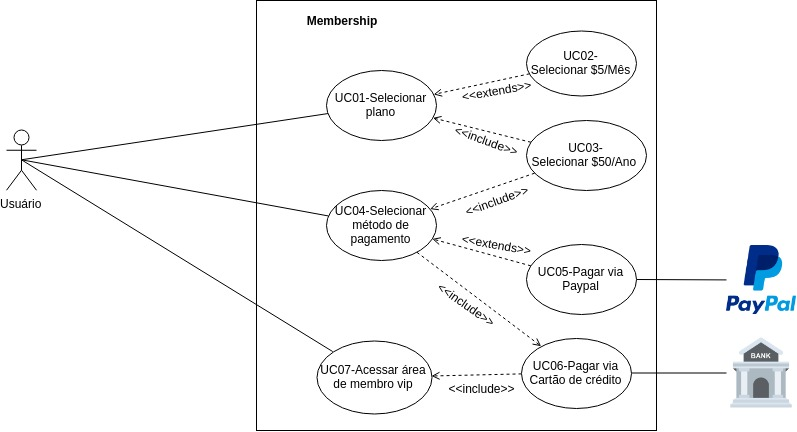
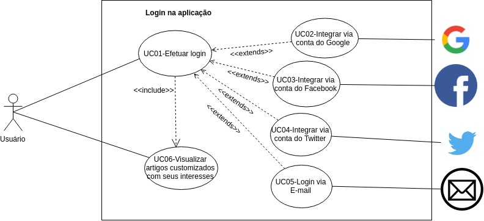
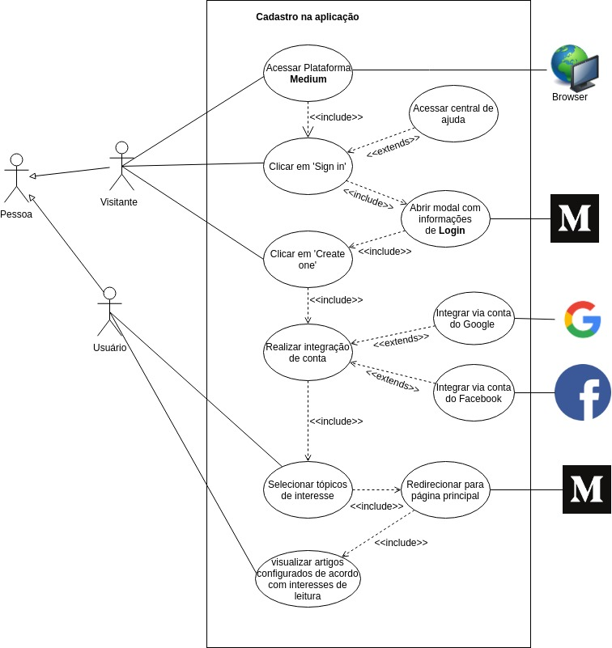
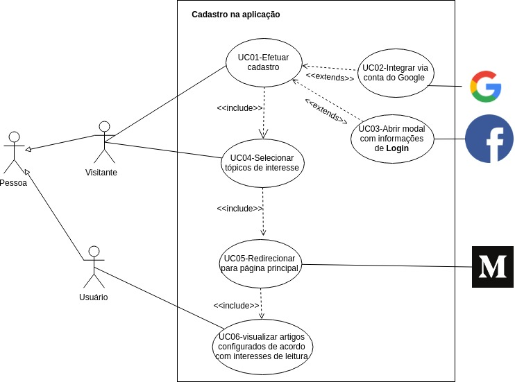
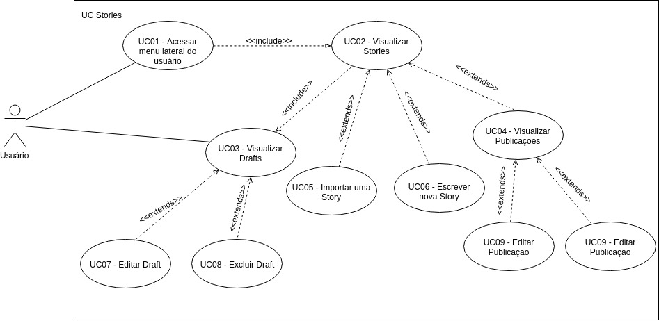
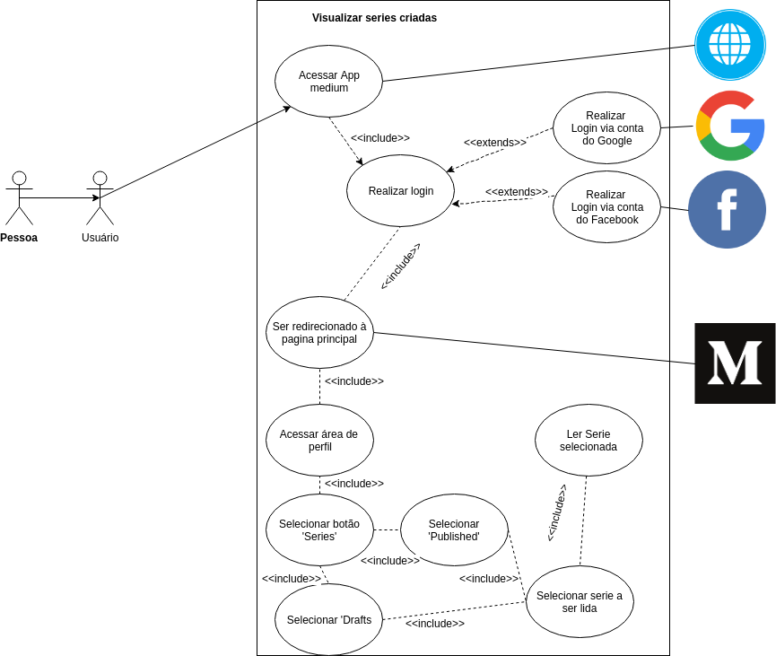
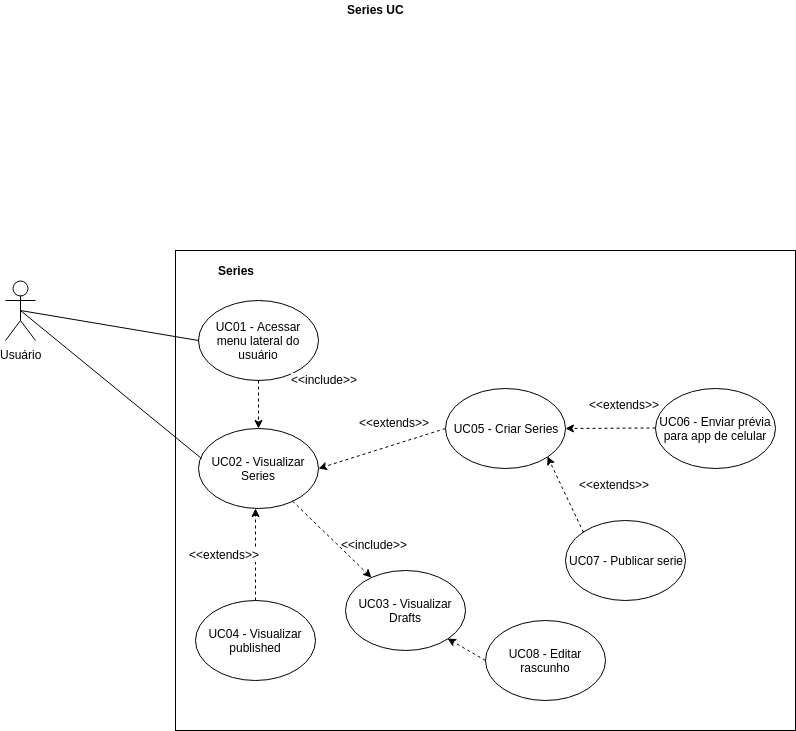
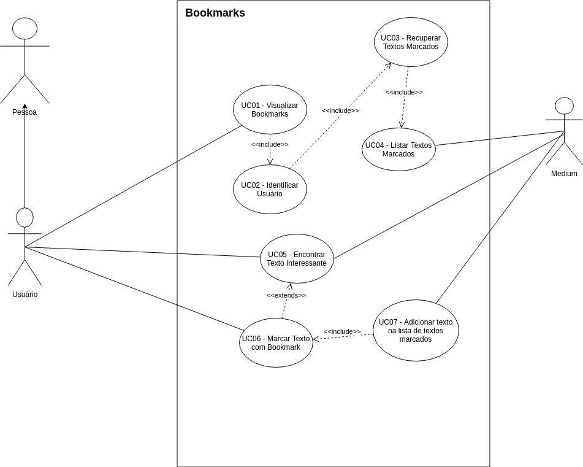
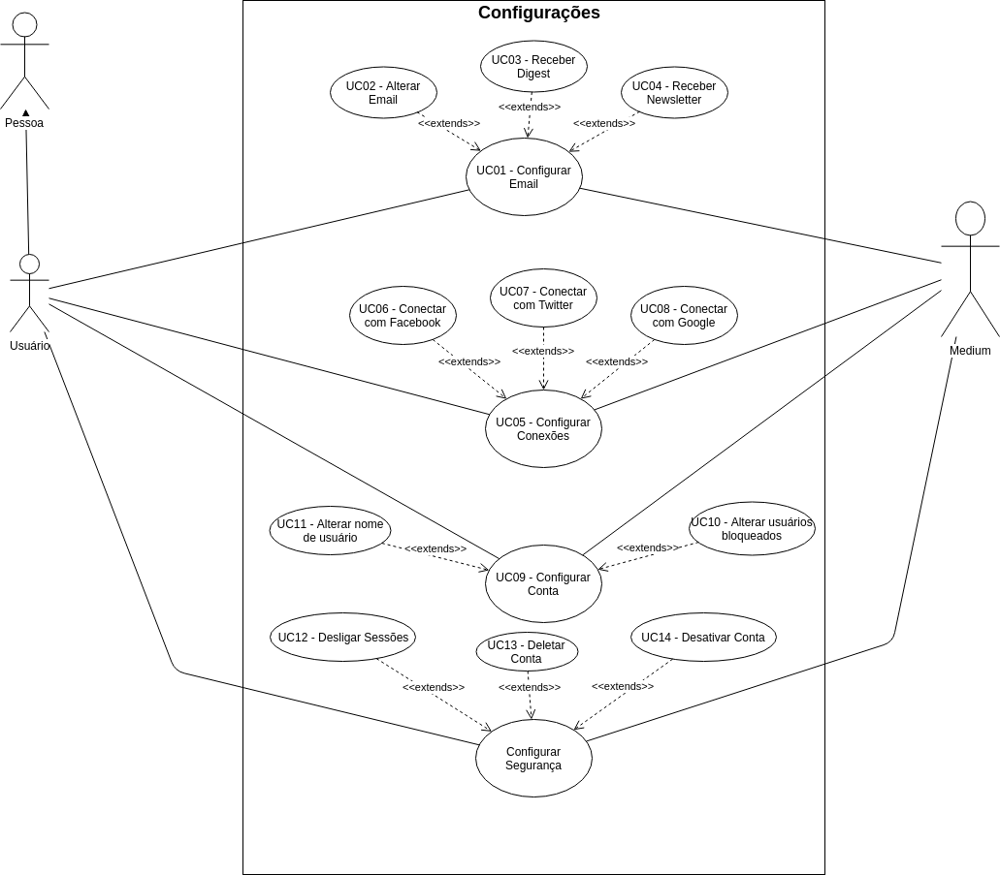

Versionamento de edições
| Data | autor | Descrição | Versão |
|---|---|---|---|
| 28/04/2019 | William Elias Alves | Criação da página | 0.1 |
| 28/04/2019 | William Elias Alves | Inserção dos casos de uso cadastro, login, membership | 0.2 |
| 28/04/2019 | William Elias Alves | Inserção dos casos de uso cadastro, login, membership versão 2.0 | 0.3 |
| 28/04/2019 | William Elias Alves | Inserção dos casos de uso de stories | 0.4 |
| 29/04/2019 | Matheus Salles Blanco | Inserção dos casos de uso de series e edição de perfil e bookmark | 0.4 |
Definição
Com o auxílio do desenvolvimento de cenários, ficou possível obter uma visão mais clara a respeito da concepção de casos de uso. Os casos de uso facilitam na obtenção de uma visão geral a respeito de dada funcionalidade de uma aplicação e poderá ser usada beneficamente por desenvolvedores, pois ela contém aspectos relevantes referentes a relacionamentos entre entidades.
Casos de Uso
Área comum
Área comum - V1.0(william elias alves)

| Rastro | Origem |
|---|---|
| Rastro | Brainstorming 2 |
| Rastro | Introspecção 1 |
Acesso ao Medium Membership
Membership - V1.0 (william elias alves)

Membership - V2.0 (william elias alves)

| Rastro | Origem |
|---|---|
| Rastro | Cenário Premium |
Login
Login - V1.0 (william elias alves)

Login - V2.0 (william elias alves)

| Rastro | Origem |
|---|---|
| Rastro | Brainstorming 1 |
| Rastro | Introspecção Login |
| Rastro | Storyboard Login |
Cadastro de usuário
Cadastro de usuário - V1.0(william elias alves)

Cadastro de usuário - V2.0(william elias alves)

| Rastro | Origem |
|---|---|
| Rastro | Brainstorming 1 |
| Rastro | Introspecção Cadastro |
| Rastro | Storyboard Cadastro |
UC stories
UC Stories - V1.0 
| Rastro | Origem |
|---|---|
| Rastro | Brainstorming 1 |
| Rastro | Introspecção Stories |
UC Series
UC Series - V1.0

UC Series - V2.0

| Rastro | Origem |
|---|---|
| Rastro | Brainstorming 1 |
| Rastro | Introspecção Series |
UC Bookmark
UC Bookmark - V1.0

| Rastro | Origem |
|---|---|
| Rastro | Storyboard |
| Rastro | Introspecção Bookmark |
UC Configurar perfil
UC Configurar perfil - V1.0

| Rastro | Origem |
|---|---|
| Rastro | Brainstorming 2 |